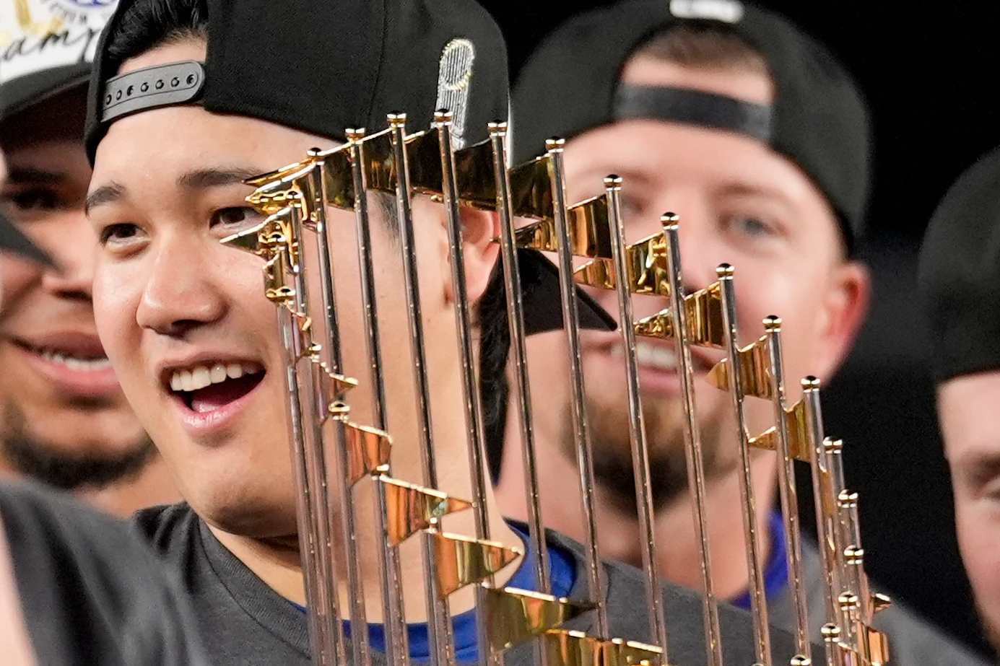

2024–Now
Los Angeles Dodgers
On December 11, 2023, Ohtani signed a 10-year, $700 million contract with the Los Angeles Dodgers, the largest contract in professional sports history at the time. Because of an elbow injury and consequent surgery in September 2023, Ohtani and the Dodgers announced that he would not pitch in the 2024 season. Ohtani debuted with the Dodgers as the designated hitter on March 20. On April 21, Ohtani hit the 176th home run of his career, passing Hideki Matsui for the most by a Japanese player in MLB history. On August 3, Ohtani joined the 30–30 club—30 home runs and 30 steals in a season—in his 108th game, becoming the third-fastest player in Major League history to do so. He became the first and only player in MLB history to hit 50 home runs and steal 50 bases in a single season. He also became the 16th player in MLB history to reach 10 or more RBI in a single game, and the first since July 7, 2018. After the 2024 season, with his 50–50 performance, Ohtani won the National League Most Valuable Player award unanimously.
By the end of his second season, Ohtani won his fourth career MVP award unanimously—his second consecutive NL MVP and third consecutive overall, became the first player in Major League history to win multiple MVPs in both leagues and only the second player to win four MVP Awards after Barry Bonds, was one of two players to win MVP in at least three consecutive seasonsm received his fifth straight Edgar Martínez Outstanding Designated Hitter Award, and received the Hank Aaron Award for the third straight year.
